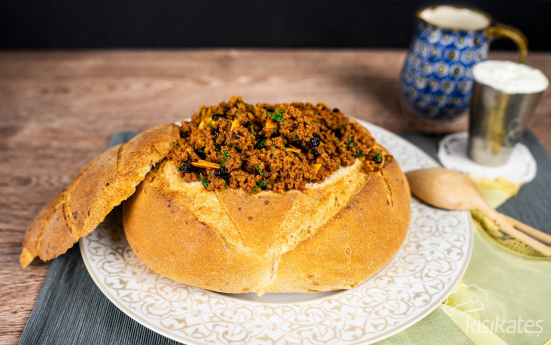
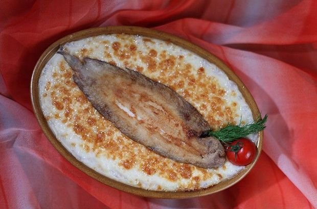
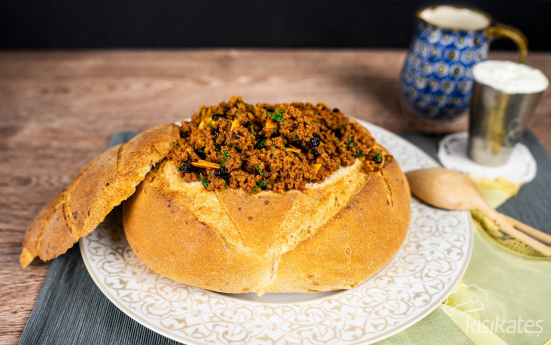
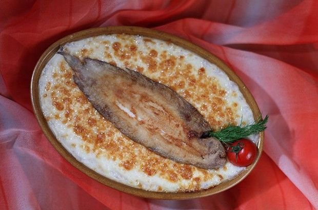

İzmir’ de balık ve deniz ürünleri üzerine müthiş bir mönü çıkıyor karşınıza. Tuzda lagos, Subye yumurtası güveci, Balık köftesi, Sardalya buğulaması, Asma yaprağında barbunya, Midye kızartması, Midye dolması, Dilbalığı şleto şiş, Kağıtta sardalya, Kefal balığıyla hazırlanan Kakavya, papalina balığından yapılan Papalina tavası... İzmir mutfağında Boşnaklar, Arnavutlar, Levanten ve Yahudilerin de önemli bir etkisi olmuş. Selanikliler İzmir’ de özellikle paça-çorba kültürünü yaygınlaştırmışlar. Sebze yemeklerinin bir kısmı da ortak. Örneğin; kemer patlıcan, ayşekadın fasulye ve enginar yemekleri... Selaniklilerin İzmir’e taşıdığı diğer yemekler Susamlı kumru, Estafno denilen tatlı, mayalı ekmek, Selanik tatlısı, kanela ve bademden yapılıp sıcak içilen Somata... Priştine‘den gelen Arnavut yemeklerinden Elbasan tava, Arnavut ciğeri, Priştine tavası ve Kirde kebabı İzmir mutfağına özgü yemekler arasında sayılıyor. İzmir’e özgü bir börek olan Boyoz’u unutmamak gerek. Musevilerin yöre mutfağına ekledikleri bu nefis börek hala Alsancak’ ta bir fırında üretiliyor.
 


